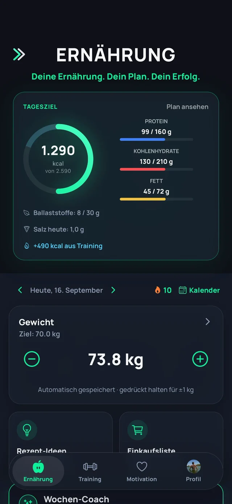
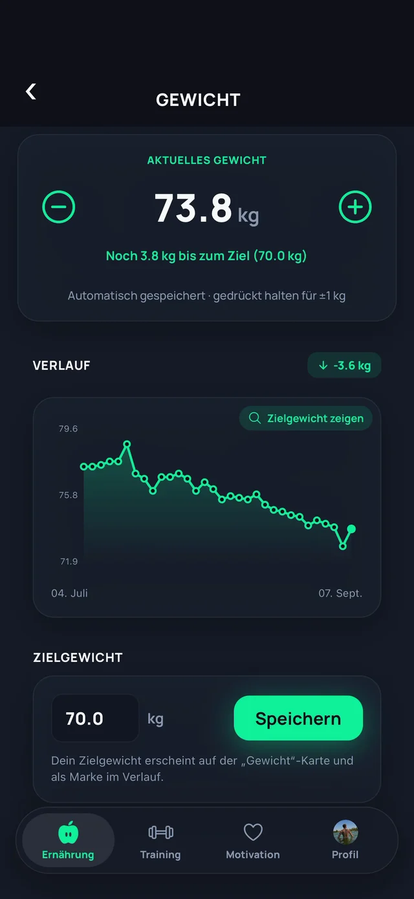
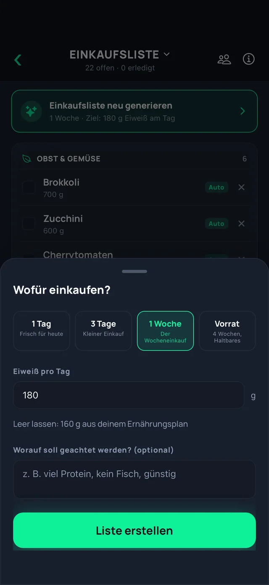
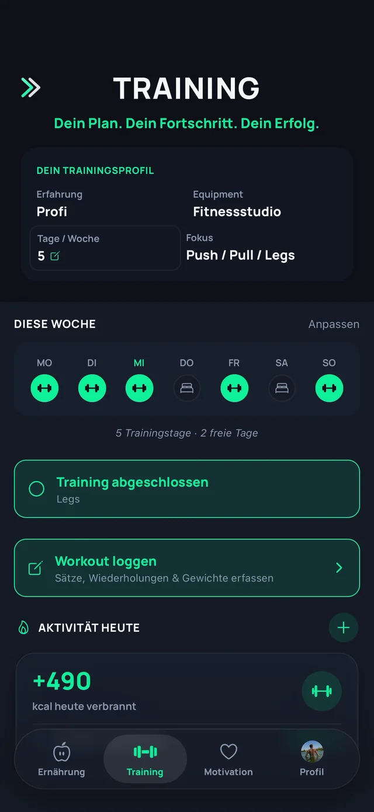
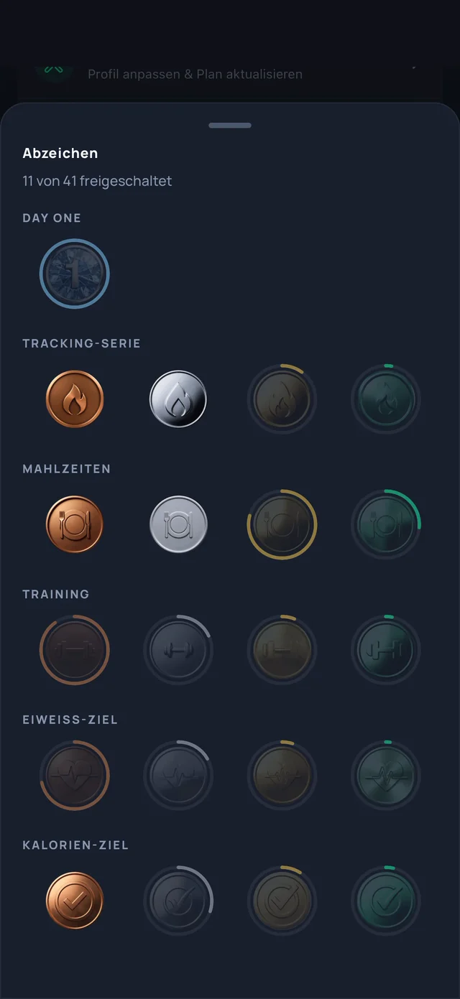
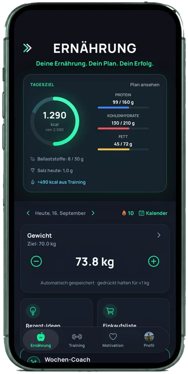
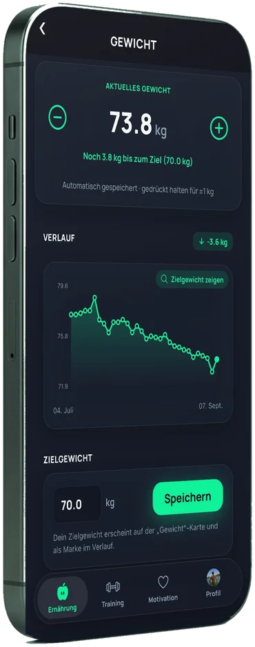
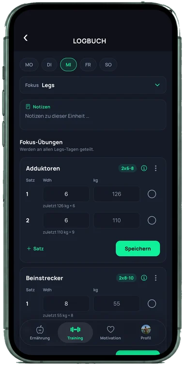
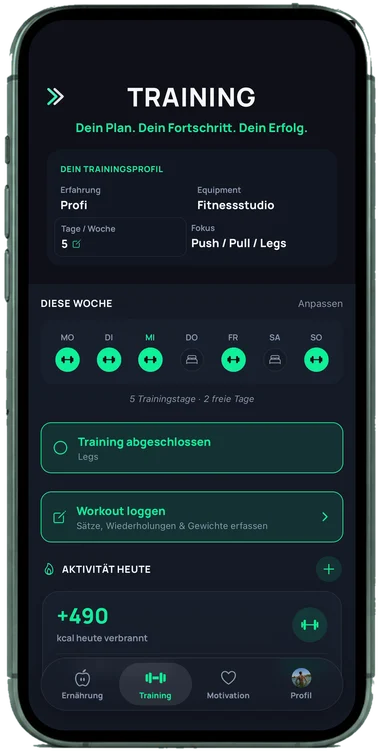
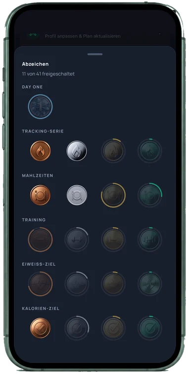

Dein Ziel. Deine Reise. Dein Erfolg.
Die Fitness-App, die mitdenkt: Training, Ernährung und Motivation – in einem.

Alles auf einen Blick.
Tagesziel, Makros, Gewicht – dein Tag steht auf einem Screen. Mahlzeiten erfasst du per Foto, Text oder Barcode.
Deine Kurve kennt die Wahrheit.
Jedes Kilo wird zur Linie. Was der Spiegel noch verbirgt, zeigt dir der Verlauf.
Vom Plan zum Einkaufszettel.
Ein Tag, drei Tage, eine Woche oder Vorrat – die Liste füllt sich passend zu deinem Ernährungsplan. Von selbst.
Training, das dich kennt.
Push, Pull, Legs – dein Plan, deine Woche, dein Logbuch. Mit deiner Uhr fließen verbrannte Kalorien direkt ein.
Dranbleiben wird belohnt.
Serien, Ziele, 41 Abzeichen. Exelery merkt sich jeden Tag, an dem du geliefert hast.




Ernährung & KI
Iss, was dich weiterbringt.
Foto machen, fertig: Die KI erkennt dein Essen und schätzt Kalorien und Makros. Der Wochen-Coach liest deine letzten sieben Tage und sagt dir in klaren Sätzen, was als Nächstes zählt.
- Mahlzeiten per Foto, Text oder Barcode
- Rezepte aus dem, was da ist
- Einkaufsliste passend zum Plan – auch als geteilte Liste


Training & Wearables
Trainiere mit System.


Dein Plan kennt deine Woche, dein Logbuch kennt jedes Gewicht. Beim nächsten Satz steht da, was du beim letzten geschafft hast – und mit deiner Uhr landen verbrannte Kalorien automatisch auf deinem Tageslimit.
- Persönlicher Plan – oder bring deinen eigenen mit
- Sätze, Wiederholungen, Gewichte – mit Verlauf
- Apple Health und Health Connect – Apple Watch, Garmin, Fitbit, WHOOP und mehr
Motivation
Bleib dran – auch an Tag 200.
Dein Warum, deine Ziele, deine Serie: Exelery dokumentiert Fortschritt, statt ihn zu bewerten. Und wer liefert, sammelt – Bronze, Silber, Gold, für jede Disziplin.
- Ziele mit Datum und Verlauf
- Serien für Tracking und Training
- Tagebuch und ein Coach, der zu dir passt

Dein KI-Coach
Frag einfach.
Der Coach kennt deine Zahlen – weil er sie nachschlägt, nicht schätzt. Er antwortet in zwei, drei Sätzen und sagt dir, wenn etwas nicht in deinen Daten steht.
- Jede Zahl aus deinen eigenen Einträgen
- Keine erfundenen Werte – lieber ein ehrliches „weiß ich nicht"
- Er schlägt vor, du entscheidest
Der Coach-Chat gehört zu Exelery Ultra.
Sei Day One.
Exelery startet bald. Wer sich jetzt einträgt, bekommt zum Start 2 Monate Exelery Pro gratis – und das Abzeichen „Day One“. Das bleibt. Für immer in deinem Profil.
Eine Mail zum Bestätigen, eine zum Start – kein Newsletter. Details in der Datenschutzerklärung.